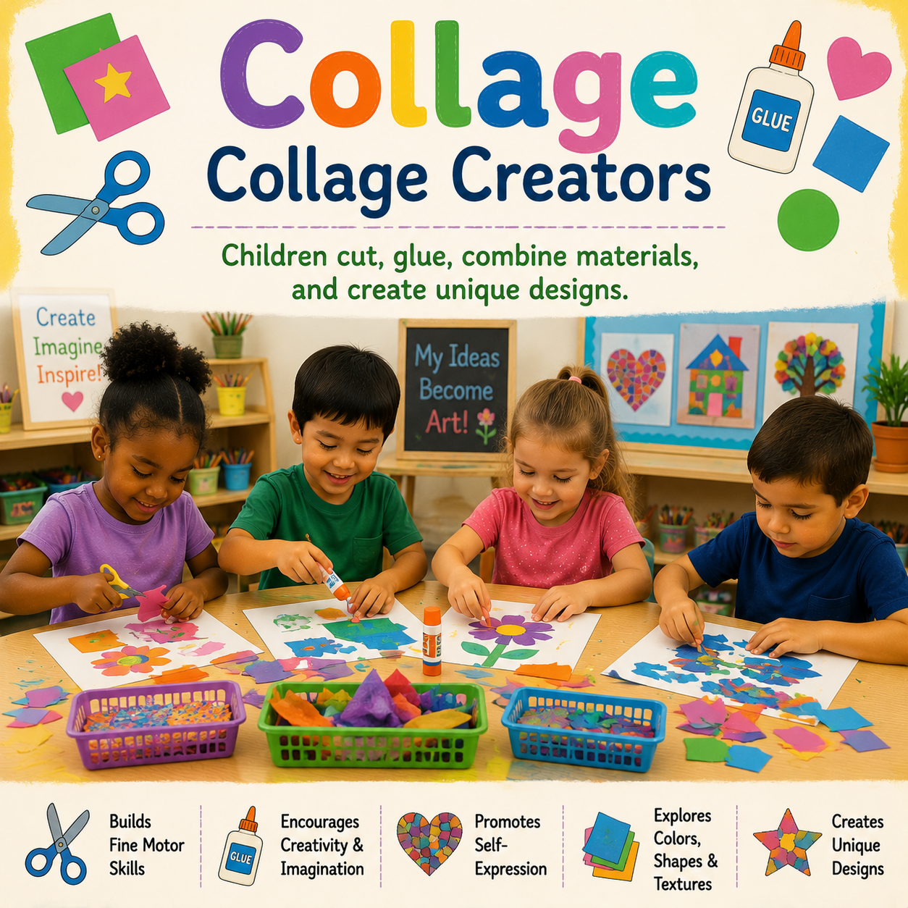
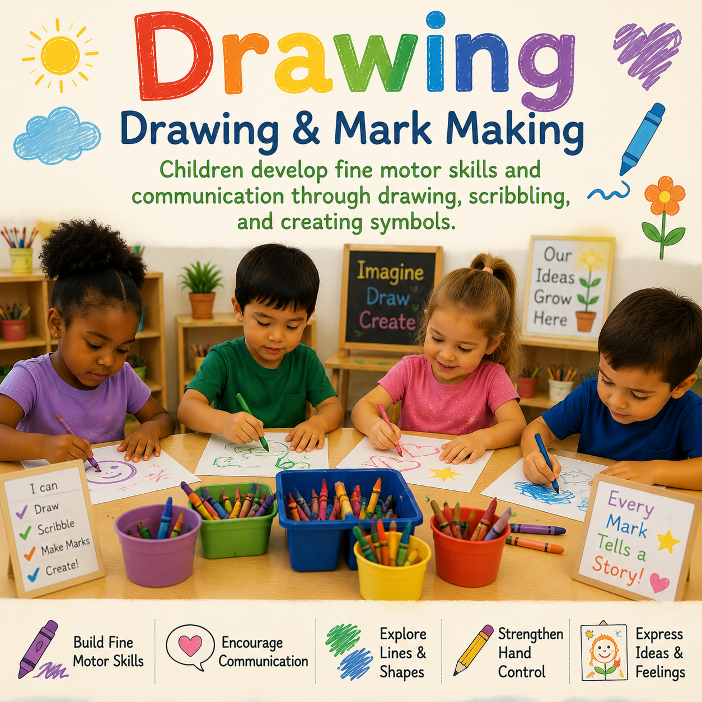

BUILDING🧱 Blocks
Activities, setup ideas, and building challenges that support spatial reasoning, creativity, problem solving, and mathematical thinking.
Explore purposeful classroom learning experiences across blocks, art, writing, literacy, science, music, dramatic play, sensory learning, math, technology, and outdoor exploration.
Learning centers give children opportunities to make choices, explore materials, communicate ideas, solve problems, create, investigate, and build understanding through hands-on experiences.
Explore resources designed to help educators create inviting learning environments where children can learn through play, exploration, collaboration, and discovery.
Discover teaching resources, activity ideas, materials, classroom setup suggestions, and learning experiences for each center.

BUILDINGActivities, setup ideas, and building challenges that support spatial reasoning, creativity, problem solving, and mathematical thinking.
 CREATIVITY
CREATIVITYCreative projects, process art experiences, materials, and invitations that encourage expression, experimentation, and discovery.

LITERACYTools, prompts, materials, and activities that support emergent writing, mark making, communication, and children's developing ideas.
Book lists, reading experiences, storytelling supports, and language rich activities that encourage literacy development.
Young scientist activities, investigations, experiments, observations, and inquiry experiences that encourage children to explore how the world works.
Rhythms, songs, movement experiences, instruments, and musical explorations that encourage creativity, connection, listening, and expression.
Imaginative play setups, props, role playing ideas, and dramatic experiences that support social development and storytelling.
Materials and activity ideas that engage the senses and encourage exploration through touch, sound, movement, texture, and observation.
Hands-on math games, counting experiences, patterns, measurement, sorting, number talks, and activities that build early mathematical reasoning.
Technology tools, playful media experiences, digital exploration, and age appropriate activities that support early technology literacy.
Outdoor exploration, movement, observation, nature experiences, and opportunities for children to investigate their environment.